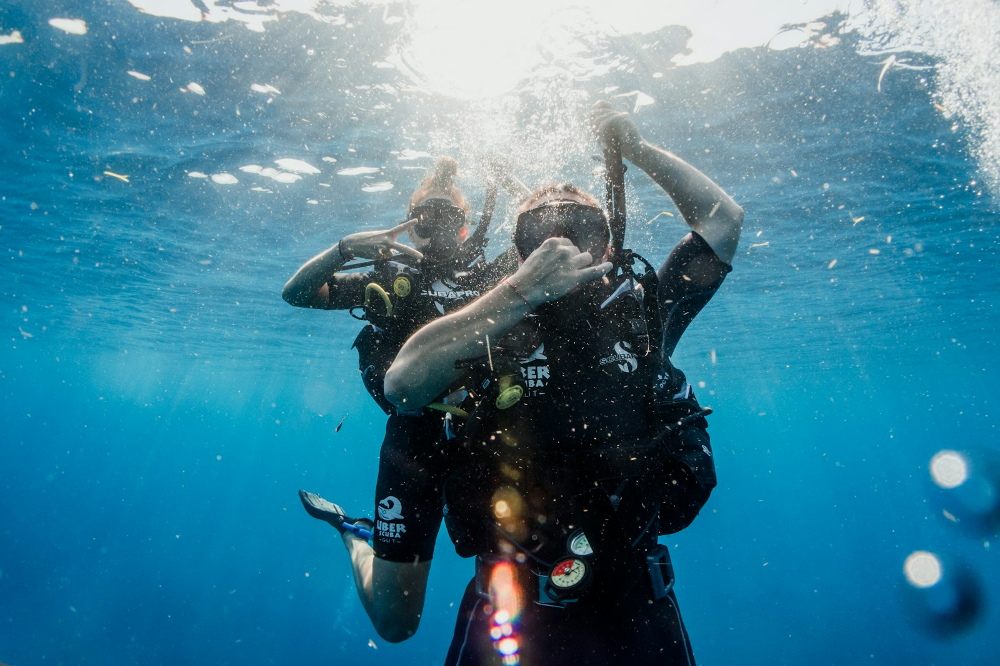
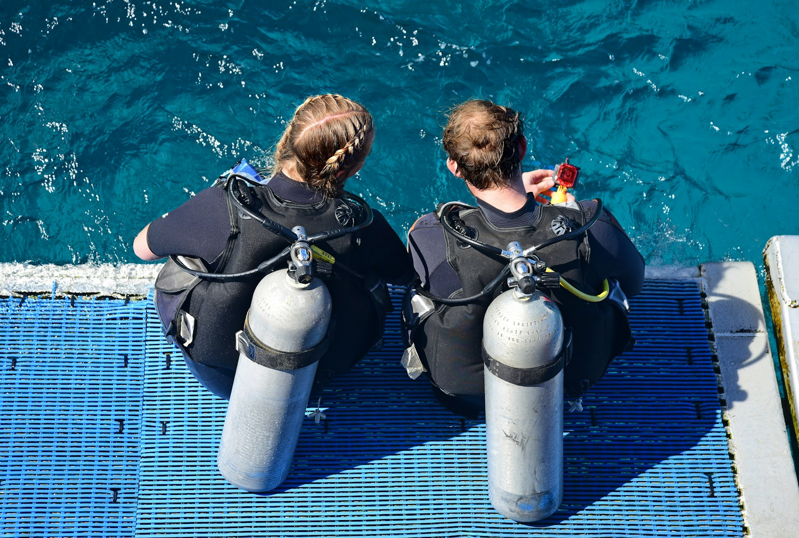
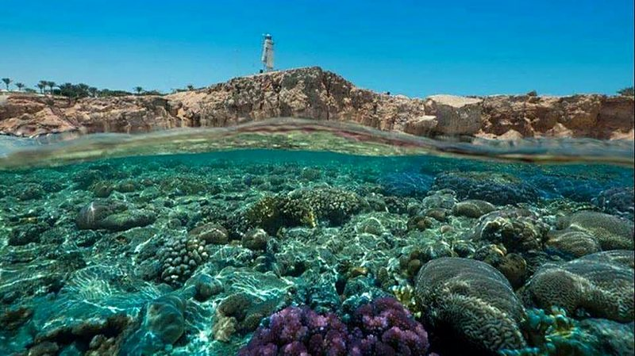
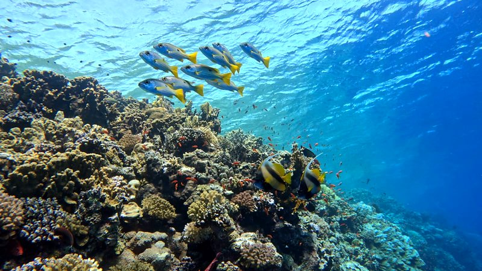
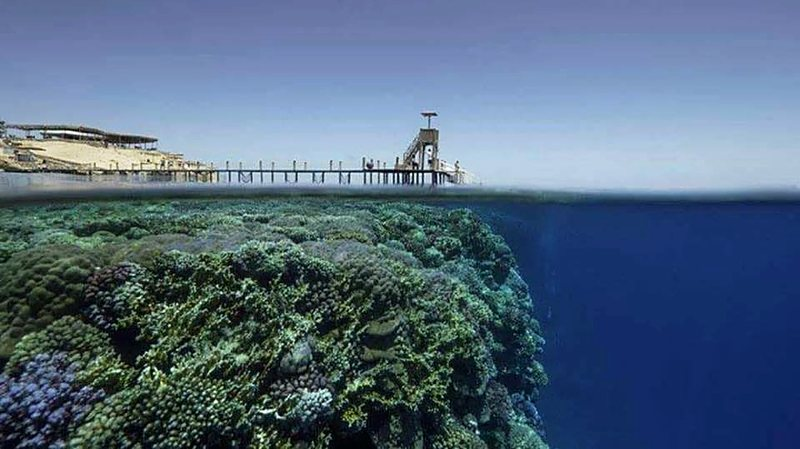

BeginnerDiscovery Dives
Best for: first-timers, kids & families
Your very first breath underwater, in a calm and supportive environment.
Ask about this courseSharm El Sheikh · Red Sea 🇪🇬
Patient, family-focused and safety-first instruction on the reefs of Sharm El Sheikh.

Training & courses
A full range of PADI training—from beginner discovery dives all the way up to PADI Divemaster.

BeginnerBest for: first-timers, kids & families
Your very first breath underwater, in a calm and supportive environment.
Ask about this course Certified divers
Certified diversBest for: divers building new skills
A wide variety of PADI Specialty courses to build real skill and confidence.
Ask about this course Professional
ProfessionalBest for: future dive professionals
Start your journey toward becoming a dive professional.
Ask about this courseCourse availability and specialty options confirmed directly — DM on Instagram to plan your training.
How booking works
Message Mootaz on Instagram — tell him your experience level and who's diving.
Pick the right course, dates and language — English, Spanish or Arabic.
Meet in Sharm El Sheikh and take your first — or next — breath underwater.
Why dive with Mootaz?
Qualified to train divers from their very first steps all the way through to PADI Divemaster and specialty certifications.
10+ years guiding certified divers in Sharm El Sheikh means I know these reefs inside and out—from the wall drops of Ras Mohammed to the currents of Tiran.
Patient, encouraging, and highly recommended by parents for teaching children and families at their own comfortable pace.
A conservative, safety-conscious approach to dive planning so you and your family can dive with total peace of mind.
Passionate about sharing the beauty of the underwater world, with the patience needed to build skill and confidence in every diver.
Lessons and dive briefings in English, Spanish, or Arabic, so you can learn comfortably in the language that suits you best.

Meet your instructor
With 10 years of experience guiding certified divers in the Red Sea and 6 years as a PADI Scuba Instructor, I turn dive dreams into unforgettable underwater adventures. I offer a full range of PADI training—from beginner discovery dives all the way up to PADI Divemaster, along with a wide variety of PADI Specialty courses.
I specialize in family-friendly diving, helping kids, teens, and adults build real confidence in the water. Known for my high energy, endless patience, and strict, conservative approach to safety, I create a calm and supportive environment whether you're taking your very first breath underwater or starting your journey toward becoming a dive professional.
Dive gallery







What divers say
FAQ
Yes. Discovery Dives are designed for your very first breath underwater, in a calm and supportive environment.
Yes — family-friendly diving is my specialty. I help kids, teens, and adults build real confidence in the water, at their own comfortable pace.
English, Spanish, and Arabic.
All the way — from beginner discovery dives up to PADI Divemaster, plus a wide variety of PADI Specialty courses.
Send a DM on Instagram. Course availability and specialty options are confirmed directly.
Sharm El Sheikh, on the Red Sea. With 10+ years guiding here, I know these reefs inside and out—from the wall drops of Ras Mohammed to the currents of Tiran.
DM to book your dives! Reach out on Instagram and let's plan your next Red Sea adventure.
DM to Book Your Dive